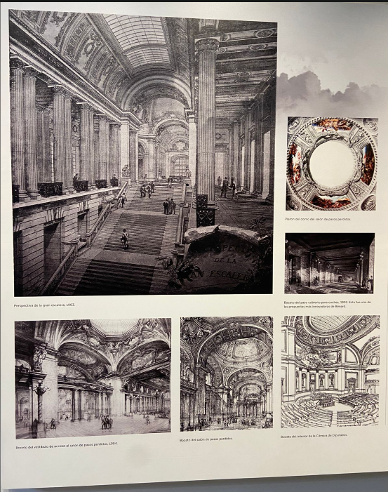
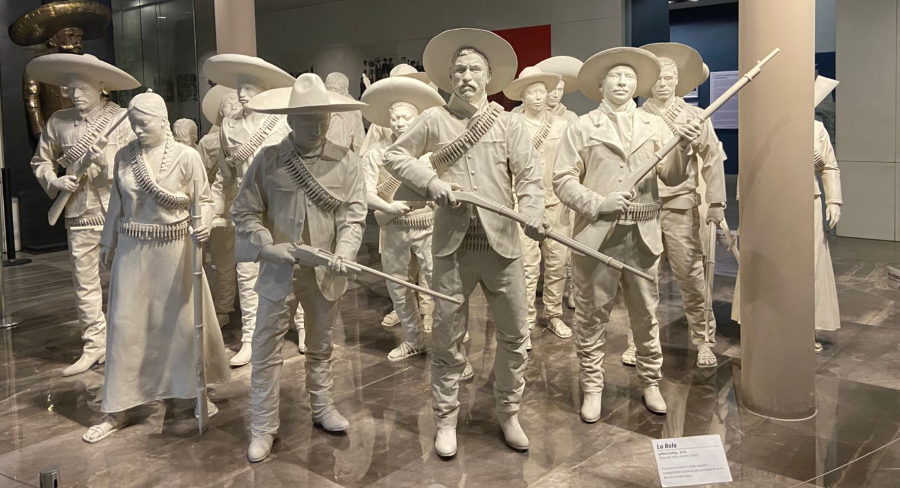
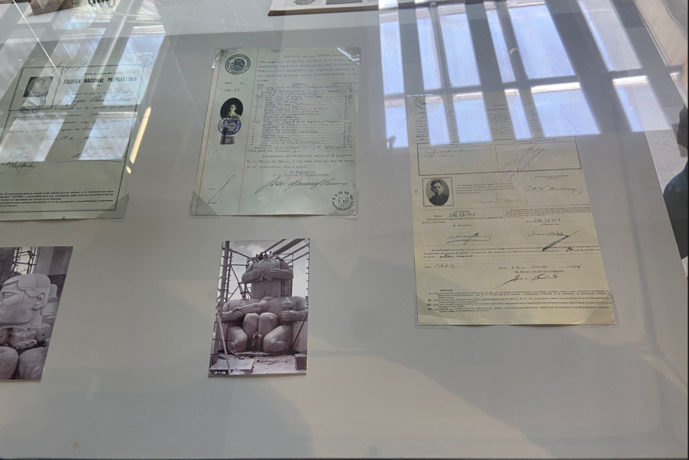

Sala 7 - Las bases del nuevo Estado (1917-1924)
Las bases del nuevo Estado
1917 - 1924
Con el fin de las grandes batallas, México se enfrentó al reto más complejo: la reconstrucción de una nación devastada. Esta sala explora cómo el Estado posrevolucionario sentó sus bases de modernidad a través de la creación de instituciones sólidas y un proyecto nacional que buscó transformar las demandas sociales en políticas públicas permanentes.
Tras la era de los caudillos, llegó la era de las instituciones. Este bloque analiza la creación de pilares fundamentales como la Secretaría de Educación Pública (SEP) y el Banco de México, organismos que permitieron al país transitar hacia una gobernabilidad civil y técnica.
La reconstrucción no fue solo de puentes y presas, sino de almas. Explora la efervescencia de un México que redescubrió sus raíces a través del arte y la enseñanza rural. En esta sección, cada nueva aula construida en el rincón más alejado del país dirigido hacia la consolidación de una patria que finalmente aprendía a caminar hacia el futuro.

Creación de instituciones

Educación pública

Identidad nacional